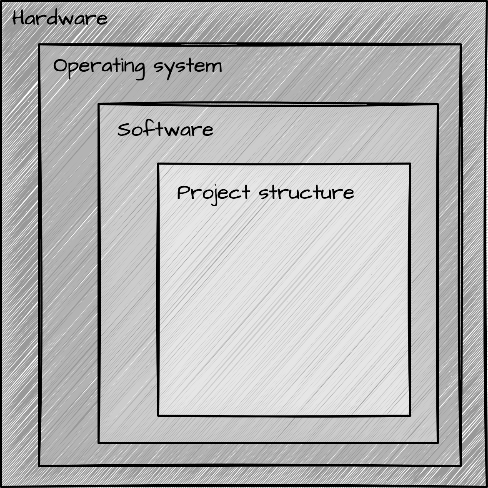
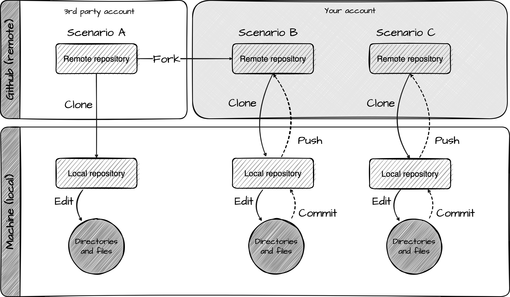

04. Understanding the computing environment
Identify layers of computing environments and preview Git and GitHub workflows
In this recipe, we will learn how to scaffold a research project and how to use the tools and resources available to us to manage research projects. We will build on our understanding of the computing environment and the structure of reproducible projects and introduce new features of Git and GitHub.
Concepts and strategies
Project components
Reproducible projects are composed of two main components: the computing environment and the project structure. The computing environment is the hardware, operating system, and software that we use to do our work and the project structure is the organization of the files and folders that make up our project. As we can see in Figure 1, each of these components and subcomponents are nested within each other.

In the lesson on the computing environment, we learned about the importance of understanding the computing environment and how to find out information about our computing environment inspecting an R session, as we seen in Snippet 1.
─ Session info ──────────────────────────────────────────────────
setting value
version R version 4.3.2 (2023-10-31)
os macOS Ventura 13.6.1
system x86_64, darwin22.6.0
ui unknown
language (EN)
collate en_US.UTF-8
ctype en_US.UTF-8
tz America/New_York
date 2023-11-26
pandoc 3.1.9 @ /usr/local/bin/pandoc
─ Packages ──────────────────────────────────────────────────────
package * version date (UTC) lib source
cli 3.6.1 2023-03-23 [1] CRAN (R 4.3.2)
jsonlite 1.8.7 2023-06-29 [1] CRAN (R 4.3.2)
rlang 1.1.2 2023-11-04 [1] CRAN (R 4.3.2)
[1] /Users/francojc/R/Library
[2] /usr/local/Cellar/r/4.3.2/lib/R/libraryAs we learned, when the computing environment that is used to create a project is different from the computing environment that is used to reproduce the project, there is a risk that the project will not be reproducible. We will not tackle all the components in Figure 1 at once, however, but instead we will focus here on the project structure. Later on, with more experience, we will address the other components.
Managing reproducible projects
The project structure is the organization of the files and folders that make up our project. A minimal project structure includes separation for input, process, and output of research, documentation about the project, how to reproduce the project, and the project files themselves. The project structure is important because it helps us organize our work and it helps others understand it.
There is no concensus about what the best project structure is. However, the principles covered in Chapter 4 can guide us in developing a project structure that both organizes our work and makes that work understandable to others. With these principles met, we can add additional structure to our project to meet our project-specific needs.
To create a reproducible project structure, we need no more than to create a directory and set of files that meet the principles for a minimal reproducible framework. During or after the project, would could back up these directories and files and/ or share them with others in a number of ways.
Although this approach is already a good step in the right direction, it is error prone and will likely lead to inconsistencies across projects. A better approach is to develop, or adopt, a project structure template that can be used for all projects, use version control to track changes to your project, and upload your project to a remote repository where it is backed up (including the version history) and can be shared with others efficiently.
This later approach is the one that we will use in subsequent lessons, recipes, and labs in this course.
Leveraging Git and GitHub
At this point, you are somewhat familiar with Git and Github. You have likely used Git to copy and download a repository from GitHub, say for example the labs for this course. However, what is going on behind the scenes is likely still a bit of a mystery. In this section, we will demystify Git and GitHub, a bit, and learn how to use them together to manage a project in different scenarios.
So let’s rewind a bit and review what Git and Github are and how they work together. Git is a version control system that allows us to track changes to our project files. It is a command line tool, much like R, that is installed as software. Also like R, we can interact with Git through a graphical user interface (GUI), such as RStudio.
Directory and file tracking with Git can be added to a project at any time. A tracked project is called a repository, or repo for short. When used on our computing environment, the repo is called a local repository. There are many benefits to using Git to track changes to local repository, including the ability to revert to previous versions of files, create and edit parallel copies of files and then selectively integrate them, and much more.
But the real power of Git is realized in combination with GitHub. Github is a cloud-based remote repository that allows us to store our git-tracked projects. It is a web-based platform which requires an account to use. Once you are signed up, you can connect Git and Github to create remote repositories and upload your local repositories to them. You can also download remote repositories to your computing environment. There are many, many features that Github offers, but for now we will focus a few key features that will help us manage our projects.
In Figure 2, I provide a schematic look at the relationship between Github and Git for three common scenarios.

Scenario A: Clone a remote repository
In this scenario, we locate a remote repository on Github that someone has made publically available. Then we clone (copy and download) the repository to our computing environment. Once the repository is cloned locally, we can edit the files as we see fit.
In essence, we are just downloading a group of files and folders to our computing environment from Github. This is the scenario that we have been using in this course to download the lab repositories.
Steps:
- Locate a remote repository on Github that someone has made publically available and copy the clone URL.
- Open RStudio and create a new project from version control.
- Paste the clone URL into the repository URL field.
- Choose a project parent directory (where the project will be saved).
- (optional) Rename the project directory.
Scenario B: Fork and clone a remote repository
This scenario differs from A in two respects. First, we first fork (copy to) the remote repository to our Github account before cloning it to our computing environment. Second, we commit (log edits) changes to the git tracking system and then push (sync to) the changes to our remote repository.
In this case, we are doing more than just downloading a group of files and folders. We are setting up a link between the other person’s remote repository and our own remote repository. We do not have to use this link, but if we do want to, we can pull (sync from) any changes that are made to the other person’s remote repository to our remote repository. This can be useful if we want to keep our remote repository up to date with the other person’s remote repository. Furthermore, this link allows us to propose changes to the other person’s remote repository with a pull request –a request for the other person to pull our changes into their remote repository. This can be useful if we want to collaborate with the other person on the project. Pull and pull request are more advanced features that we will not address at this point.
The second difference is that we are using Git to track changes to our local repository and then push those changes to our remote repository. This is a key feature because it allows us to keep track of changes to our project files and folders and revert to previous versions if needed. It also allows us to share our project with others and collaborate with them.
Steps:
- Locate a remote repository on Github that someone has made publically available and click the fork button.
- Still on Github, choose new account as the owner of the forked repository.
- In the forked repository, copy the clone URL.
- Open RStudio and create a new project from version control.
- Paste the clone URL into the repository URL field.
- Choose a project parent directory (where the project will be saved).
- (optional) Rename the project directory.
- Make changes to the project files and folders.
- Commit the changes to the git tracking system.
- Push the changes to the remote repository.
Scenario C: Create/ Join and clone a remote repository
This scenario is similar to B, but instead of forking a remote repository, we create a new remote repository on Github and then clone it to our computing environment. We then commit and push changes to our remote repository. In this case, we are creating a new remote repository and then using Git to track changes to our local repository and push those changes to our remote repository.
This scenario is common when we work on our own projects or when we want to collaborate with others on a project. In the latter case, we would create a remote repository and then invite others to collaborate on it. Everyone with permissions to the remote repository can clone it to their computing environment, make changes, and then push those changes to the same remote repository. This allows everyone to work on the same project and keep track of changes to the project files and folders.
When working with multiple people on a project, you can imagine that if I’m working on the project locally and you are working on the project locally, we might make changes to the same files and folders. If we both push our changes to the remote repository, there is a risk that the changes will conflict with each other. Git and Github have features that help us manage these conflicts (pull, fetch, merge, etc.), but we will not address them at this point either.
Steps:
- Create a new remote repository on Github or accept an invitation to collaborate on a remote repository.
- Copy the clone URL.
- Open RStudio and create a new project from version control.
- Paste the clone URL into the repository URL field.
- Choose a project parent directory (where the project will be saved).
- (optional) Rename the project directory.
- Make changes to the project files and folders.
- Commit the changes to the git tracking system.
- Push the changes to the remote repository.
Summary
In this recipe, we reviewed the components of reproducible research projects: the computing environment and the project structure. The computing environment is the hardware, operating system, and software that we use to do our work and the project structure is the organization of the files and folders that make up our project. Furthermore, we learned more about Git and Github and how they can be used together to manage a project in different scenarios.
Check your understanding
Select the component of the computing environment that of the following are related to:
Windows 10R version 4.3.1dplyr_1.1.4
Select the Git name for the following actions:
- Copy and download a remote repository to your computing environment
- Log edits to the git tracking system
- Sync changes to the remote repository
Lab preparation
In lab 4, we will apply what we have learned in this recipe to scaffold our own research project by forking and cloning a research project template repository on Github. We will then edit the project files and folders, commit the changes to the git tracking system, and push the changes to our remote repository on Github.
Before beginning Lab 4, make sure that you are comfortable with the following:
- Cloning a remote repository to your computing environment
- Creating and editing files and folders, in particular Quarto documents.
The additional knowledge and skills that you will need to complete the lab are covered in this recipe which include:
- Understanding the components of a reproducible project
- Understanding the importance of project structure for reproducible project management
- Using Git, GitHub, and RStudio to manage a project using:
- Forking, cloning, editing, commiting, and pushing a repository